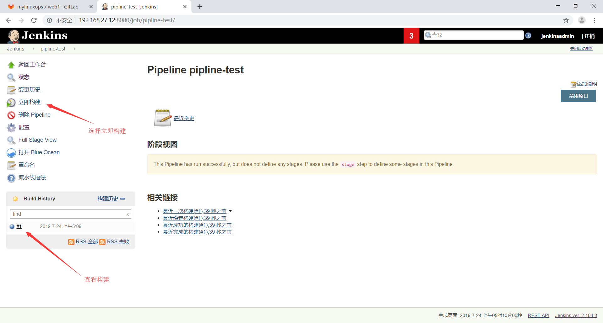

pipline简介
官方介绍；https://jenkins.io/2.0/
pipline是帮助Jenkins实现CI到CD转变的重要角色，是运行在jenkins2.X版本的核心插件，简单来说Pipline就是一套运行于Jenkins上的工作流框架，将原本独立运行于单个或者多个节点的任务连接起来，实现单个任务难以完成的复杂发布流程，从而实现单个任务很难实现的复杂流程编排和任务可视化，pipline的实现方式是一套Groovy DSL，任何发布流程都可以表述为一段Groovy脚本。
pipline语法
Stage：阶段，一个pipline可以划分为若干个stage，每个stage都是一个操作，比如clone代码、代码编译、代码测试和代码部署，阶段是一个逻辑分组，可以跨多个node执行。
Node：节点，每个node都是一个jenkins节点，可以是jenkin smaster也可以是jenkins agent，node是执行step的具体服务器。
Step：步骤，step是jenkinspipline最基本的操作单元，从在服务器创建目录到构建容器镜像，由各类Jenkins插件提供实现，例如：sh “make”
pipline优势
可持续性：jenkins的重启或者中断后不影响已经执行的PiplineJob
支持暂停：pipline可以选择停止并等待人工输入或批准后再继续执行。
可扩展：通过groovy的编程更容易的扩展插件。
并行执行：通过groovy脚本可以实现step，stage间的并行执行，和更复杂的相互依赖关系。
pipline使用方法
简单的输出一个hello world

测试流水线
修改流水线脚本，写入以下测试代码
1
2
3
4
5
6
7
8
9
10
11
12
13
14
| node {
stage("clone 代码"){
echo "代码 clone"
}
stage("代码构建"){
echo "代码构建"
}
stage("代码测试"){
echo "代码测试"
}
stage("代码部署"){
echo "代码部署"
}
}
|
再次进行构建，流水线发生了变化
流水线语法生成器的使用
在控制台上查看输出
去slave-2上查看项目是否被克隆下来
1
2
3
4
5
6
7
| root@slave-2:~
total 16
drwxr-xr-x 3 root root 4096 Jul 24 05:31 ./
drwxr-xr-x 4 root root 4096 Jul 24 05:31 ../
drwxr-xr-x 8 root root 4096 Jul 24 05:31 .git/
-rw-r--r-- 1 root root 154 Jul 24 05:31 index.html
|
继续编写流水线脚本
1
2
3
4
5
6
7
8
9
10
11
12
13
14
15
16
17
18
19
20
21
22
23
24
25
26
27
28
29
30
31
| node("jenkins-slave-2"){
stage("clone 代码"){
sh 'cd /var/lib/jenkins/workspace/pipline-test && rm -rf ./*'
git credentialsId: '38462a8a-5efd-4d9b-8ed5-06b021bd01e9', url: 'git@192.168.27.11:mylinuxops/web1.git'
echo "代码 clone完成"
}
stage("代码打包"){
sh 'cd /var/lib/jenkins/workspace/pipline-test && tar czvf code.tar.gz ./index.html'
echo "代码打包完成"
}
stage("停止tomcat服务"){
sh 'ssh www@192.168.27.31 "/etc/init.d/tomcat stop"'
sh 'ssh www@192.168.27.32 "/etc/init.d/tomcat stop"'
}
stage("代码复制"){
sh 'cd /var/lib/jenkins/workspace/pipline-test && scp code.tar.gz www@192.168.27.31:/data/tomcat/tomcat_appdir/'
sh 'cd /var/lib/jenkins/workspace/pipline-test && scp code.tar.gz www@192.168.27.32:/data/tomcat/tomcat_appdir/'
}
stage("代码部署"){
sh 'ssh www@192.168.27.31 "cd /data/tomcat/tomcat_appdir/ && rm -rf /data/tomcat/tomcat_webdir/myapp/* && tar xvf code.tar.gz -C /data/tomcat/tomcat_webdir/myapp/ "'
sh 'ssh www@192.168.27.32 "cd /data/tomcat/tomcat_appdir/ && rm -rf /data/tomcat/tomcat_webdir/myapp/* && tar xvf code.tar.gz -C /data/tomcat/tomcat_webdir/myapp/ "'
}
stage("启动tomcat服务"){
sh 'ssh www@192.168.27.32 "/etc/init.d/tomcat start"'
sh 'ssh www@192.168.27.32 "/etc/init.d/tomcat start"'
}
}
|
由于此处使用的是分布式的jenkins还需要做好与后端tomcat的免密钥认证
slave-1与后端服务器做免密钥认证
1
2
3
| root@slave-1:~
root@slave-1:~
root@slave-1:~
|
slave-2与后端tomcat做免密钥认证
1
2
3
| root@slave-2:~
root@slave-2:~
root@slave-2:~
|
将脚本写入流水线脚本中
执行构建